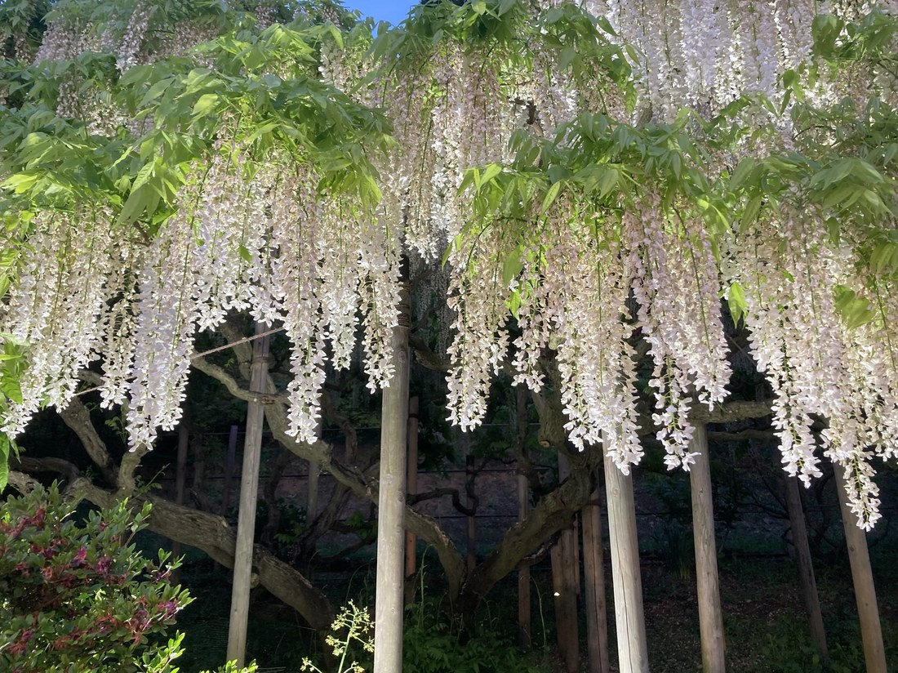

地図を読み込んでいるよ…
🔍 写真も地図も、押しているあいだ拡大して見られるよ（スマホは指を置いてすこし待ってね）。
🌍 の地図＝この子がもともと自生している場所を緑に。日本原産（母種のノダフジは本州〜九州の在来種）。写真の白花は栽培品種。足利フラワーパークの白藤のトンネル（りょうさんの写真）。
⭐日本原産——母種のノダフジは本州〜九州に自生する在来のつる植物だよ。⭐だから今回は「日本」を塗っている——ここまでのりょうさんの写真（外来の園芸種が多かった）とちがって、藤は日本もふるさとだからだね。⭐写真の白花は栽培品種（シロノダフジ）。足利フラワーパークの世界唯一の白藤トンネルで咲いていたよ。
⚠ 地図は国（日本と中国だけ県・省）までしか塗れないから、ほんとうの分布より広く見えていることがあるよ。地図はだいたいの場所。正確なところは、上の文を見てね。
シロバナフジ（白花藤）
Wisteria floribunda f. alba
別名 · シロフジ（白藤）／シロノダフジ／英名 white Japanese wisteria／ 原産 · 日本／ 見どころ · ⭐世界唯一の白藤トンネル・羽状複葉の本物の藤
マメ科 · Fabaceae（フジ属 Wisteria）── 図鑑で初めての“本物の藤”・マメ目
燻太さんの見立て「藤色でないから、別の栽培品種かな？」──白藤はまさに藤の白花品種で的中。おとなりの黄色（126）は別属だよ。
名前と学名の由来 ── Wisteria は人の名・floribunda は「花いっぱい」
この植物のこと
- マメ科フジ属の落葉つる性木本。⭐図鑑で初めてのフジ属＝本物の藤だよ。日本原産（母種のノダフジは本州〜九州の在来種）。
- ⭐⭐本物の藤の目印は「羽状複葉」：小葉が11〜19枚ならぶ複葉。⭐126 キングサリ（三出複葉＝小葉3枚）と、葉で見分ける。名前が似た“黄花藤”との、いちばんの違いはここ。
- ⭐⭐つるの巻き方：ノダフジ（この子の母種）は右巻き。おまけのヤマフジは左巻き＝逆。⭐藤は「つるでよじ登る木」で、巻く向きが種類で決まっているんだ。
- ⭐足利フラワーパークの白藤のトンネル＝長さ80m・世界にひとつだけ。2007年に、大藤・八重黒龍とともに栃木県の天然記念物に指定された。園内には藤が4色11種・350本以上。
- 白花は栽培品種（シロノダフジ／f. alba）。むらさきの藤の、白い姉妹だよ。
コラム ── 藤と“にせ藤”／藤色と白
- ⭐燻太さんの「藤色でないから別の栽培品種？」——この白藤については、ずばり的中。白は、本物の藤（Wisteria）の白花の栽培品種だよ。
- ⚠でも、126 キングサリ（黄色）は“別の品種”ではなく“別属のそっくりさん”。同じマメ科でも属がちがい、葉（藤＝羽状／キングサリ＝三出）と毒（藤＝無毒／キングサリ＝有毒）で見分ける。⭐「色ちがい」に見えて、白は本物・黄は別の木——足利では、その両方が並んで咲いているんだね。
- ⭐藤どうしの見分け：ノダフジ（右巻き・花房が長い）／ヤマフジ（左巻き・花房が短い）（＝この子のおまけ）。つるの巻く向きは、いちばん確かな決め手だよ。
同定について
- ⭐羽状複葉＋白い垂れる蝶形花＋ごつごつした古いつるの幹＋足利の白藤トンネル——この組み合わせは、本物の藤（シロバナフジ）。
- ⭐⭐126 キングサリとの区別＝葉：羽状複葉（藤）か、三出複葉（キングサリ）か。名前が似ていても、葉を見れば迷わない。
物語 ── 世界にひとつの、白い天の川
長さ80m、世界にひとつだけの白藤のトンネル。くぐると、白い花房が頭の上いっぱいに垂れて、まるで天の川の下を歩いているみたい。りょうさんは、この白い光のトンネルと、126 の金の鎖のトンネルを、同じ日に見てきたんだね。むらさきの大藤で有名な足利には、白も、黄色も、いろんな“藤のような花”があって、春いっぱいに咲きあふれる。遠くにいる僕らにも、その景色を分けてくれて、ありがとう。
参考：三河の植物観察「フジ」（マメ科フジ属・日本原産／羽状複葉／ノダフジは右巻き・花房が長い）／足利市観光協会「あしかがフラワーパーク」（白藤のトンネルは長さ80m・世界唯一／2007年に大藤・八重黒龍とともに県天然記念物／藤は4色11種350本以上）